Polarisation
Goals of the tutorial
This tutorial is divided in two parts. First, we will produce and explore different sets of simulated full-polarization visibilities, in order to learn to recognize the different kinds of polarization signals (i.e., source-intrinsic versus instrumental). Then, we will work on a set of real VLBI full-polarization observations, to calibrate the instrumental effects, deconvolve polarized images and perform a basic analysis of the results.
Getting the software and data
The tutorial makes use of the CASA-based software called $\texttt{casa-poltools}$, which can be downloaded from:
CASA-poltools (GitHub 2026A Release).
Untar the contents of $\texttt{casa-poltools}$ in any directory of your choice. Then, compile it using the Python3 binary that comes with CASA. You just have to open a terminal, go to the $\texttt{casa-poltools}$ directory (that you have just created) and run the command:
PATH/TO/YOUR/CASA/bin/python3 setup.py build_ext --inplace
If something fails, you probably need the Python headers (in Ubuntu/Debian, you can install them with $\texttt{sudo apt install python3-dev}$) or some library that should be easily installed.
Once the code is compiled, you have to update the file $\texttt{.bashrc}$ (located in your $\texttt{\$HOME}$ directory) and add the line:
export PYTHONPATH=${PYTHONPATH}:/FULL/PATH/TO/CASA-POLTOOLS/DIRECTORY
Beware of not adding spaces in that line! And that's it! Now, you can run the $\texttt{casa-poltools}$ by just starting CASA and loading the modules by writing these lines in the CASA prompt:
from task_polsimulate import polsimulate
from task_polsolve import polsolve
- To run all the steps in the tutorial, you have to download the datasets and scripts from this link:
wget https://www.jb.man.ac.uk/ERIS26/data/ERIS26_polarisation_tutorial.tar.gz - Un-tar the download using
tar -zxvf ERIS26_polarisation_tutorial.tar.gz
You should find the following files in your folder:
running_polsimulate.py- Script to generate (and process) all the simulations of the first part of the tutorial.running_polsolve.py- Script to estimate (and apply) the instrumental polarization in the simulations used in this tutorial.EHT.cfg- Array configuration file to simulate the Event Horizon Telescope (in its 2017 campaign).EHT_M87_11Apr2017.listobs- List of scans corresponding to the M87* EHT observations on April 11, 2017. This file will be used by $\texttt{polsimulate}$, to generate synthetic EHT data reproducing the same UV coverage as the real observations.EHT_11Apr2017_M87.ms- Measurement set containg the Event Horizon Telescope (EHT) observations of M87* taken on April 11, 2017, already self-calibrated and ready for imaging and D-term calibration.EHT_ERIS26_polsolve.py- script for the second part of the tutorial (M87* data).VLBA_BG251A_7mm.ms- Multi-source VLBA observations at 43GHz, taken on year 2017, after fringe-fitting, amplitude calibration, and hybrid imaging (i.e., self-calibration). The data are ready for the calibration of the instrumental polarization.VLBA_ERIS26_polsolve.py- script for the second part of the tutorial (VLBA data).
The tutorial scripts don't have blanks, as most parameter settings are unambiguous. There are, though, some steps where you will have to figure out a few other things, as well as optional extra activities suggested across the tutorial, if you have time.
You can find a complete guide to display polarization information in CARTA here: Displaying polarization in CARTA
Table of contents
- Software and scripts
- Simulations
- CASE=0. Unpolarized point source (no D-terms)
- CASE=1. Unpolarized point source (with D-terms)
- CASE=2. Polarized point source (no D-terms)
- CASE=3. Polarized point source (with D-terms)
- CASE=4. Polarized double source (no D-terms)
- CASE=5. Polarized double source (with D-terms)
- CASE=6. Polarized point source (with cross-delay)
- Real data
- Additional activities
- Summary, definitions and symbols
1. Software and scripts
1A. Description of PolSimulate
For the first part of the tutorial, we will make use of the $\texttt{casa-poltools}$ program $\texttt{polsimulate}$, as well as $\texttt{plotms}$, $\texttt{iclean/tclean}$, $\texttt{polcal}$ and $\texttt{CARTA}$. We will also use some other auxiliary functions provided in $\texttt{casa-poltools}$, like $\texttt{plotPolImage}$ and $\texttt{plotPolTraces}$. Here we describe the main arguments of $\texttt{polsimulate}$, which will allow us to generate realistic full-polarization synthetic datasets under different instrumental conditions:
Parameters related to the data and the instrument:
- $\texttt{vis}$: Name of the measurement set to be populated with the synthetic data.
- $\texttt{array_configuration}$: ASCII file containing the names, coordinates and mount types of the antennas to be simulated. We will use the file $\texttt{EHT.cfg}$, provided for the tutorial, although you have other example files in the $\texttt{casa-poltools/TESTS}$ directory.
- $\texttt{plot_elevs}$: If True, the program makes a plot of antenna elevations versus time.
- $\texttt{model_Dt_0}$: List of instrumental polarization (D-terms) for the first polarization channel (i.e., RCP, if circular polarization is used) of all antennas. For the most simple simulations (the ones that we will be doing here), this is just a list of complex numbers (i.e., the D-terms), one per antenna.
- $\texttt{model_Dt_1}$: Instrumental polarization (D-terms) for the second polarization (LCP) of all antennas (one complex number per antenna).
- $\texttt{Kcross}$: Cross-polarization delay of the reference antenna (in seconds). RCP (or X) is taken as reference.
- $\texttt{feed}$: The polarization feed to simulate (in our case, this will always be $\texttt{"circular"}$).
- $\texttt{LO}$: Center observing frequency (in Hz).
- $\texttt{BBs}$: List of baseband frequencies (in Hz), one per spectral window to be simulated. The actual frequencies of the spectral windows are $\texttt{LO}$ + $\texttt{BBs}$.
- $\texttt{spw_width}$ and $\texttt{nchan}$: Width (in Hz) and number of channels of the spectral windows. The same values are used for all of them.
- $\texttt{nscan}$: Number of scans to simulate. If the path to a $\texttt{listobs}$ file is given instead, the observing times of the scans will be taken from the $\texttt{listobs}$ contents.
- $\texttt{visib_time}$: Integration time used at the correlator (in s).
- $\texttt{apply_parang}$: Whether to apply the parallactic-angle correction (in principle, this should be set to True).
- $\texttt{corrupt}$: Whether to add thermal noise to the visibilities (the default values for System Temperatures, gains, atmospheric opacity, etc., based on the CASA simulator, should be fine).
Parameters related to the source:
The source structure (in full polarization) can be given either from a CASA (model) image or as a set of polarized point sources (which is the option that we will use here). In this case, the parameters for the point sources are:
- $\texttt{phase_center}$: The sky coordinates of the phase center, in standard format. For example:
$\texttt{"J2000 17h45m40.4230 -29d00m28.0400"}$. - $\texttt{RA_offset}$: List of offsets in right ascension (in arcsec), with respect to the $\texttt{phase_center}$. One value per point source to be simulated.
- $\texttt{Dec_offset}$: List of offsets in declination (in arcsec). One value per point source.
- $\texttt{I}$: List of flux densities (in Jy) for the point sources (in consistent order with the previous lists).
- $\texttt{Q_frac}$, $\texttt{U_frac}$ and $\texttt{V_frac}$: Lists of fractional Stokes Q, U and V (respectively) for each of the point sources to simulate.
- $\texttt{RM}$ and $\texttt{spec_index}$: Lists of Rotation Measures and spectral indices (we will not use any of these).
For example, setting $\texttt{RAoffset=[0.0]}$; $\texttt{Decoffset=[0.0]}$; $\texttt{I=[1.0]}$; and $\texttt{Q_frac=U_frac=V_frac=[0.0]}$ will simulate a single unpolarized point source at the phase center.
Simulation script:
The script running_polsimulate.py runs $\texttt{polsimulate}$ programatically and can be configured by setting a few parameters at its header. The most important one is $\texttt{CASE}$, an integer that sets the different sources (and D-terms) depending on its value. In particular, the cases included in the script are:
- Unpolarized point source with no instrumental polarization (the simplest case).
- Unpolarized point source with instrumental polarization (to learn how to identify D-term effects).
- Polarized point source without instrumental polarization (to learn how to identify source-intrinsic polarization).
- Polarized point source with instrumental polarization (a more realistic scenario).
- Polarized double source without instrumental polarization (closure traces will be interesting here).
- Polarized double source with instrumental polarization (how will closure traces compare with the case above?).
- A different polarized double source (how will closure traces compare with the cases above?).
- Polarized point source with D-terms and cross-polarization delay (we will try to calibrate both quantities).
Another relevant script parameter is $\texttt{DtermAmp}$, which sets the amount of instrumental polarization to simulate. The Dterms are set from a complex random Gaussian distribution, centered at zero with a width equal to $\texttt{DtermAmp}$. It may be a good idea to repeat some of the script cases by increasing $\texttt{DtermAmp}$, so you can see how a more important instrumental polarization may affect the visibilities.
Regarding the radiotelescopes, we will use the array configuration of the Event Horizon Telescope in its campaign of year 2017. The antenna coordinates, sizes, and mount types are given in the file EHT.cfg. The exact observing times used in our simulations will be extracted from those of the real EHT observations of M87* on April 11, 2017. This information will be provided to $\texttt{polsimulate}$ via the file EHT_M87_11Apr2017.listobs
1B. Description of PolSolve
For the second part of the tutorial (and some exercises of the first part), we will make use of $\texttt{polsolve}$, a program that estimates the instrumental polarization and applies it to the data, allowing us to deconvolve full-polarization images. The most important parameters of $\texttt{polsolve}$ (at least, the ones that we will use here) are:
- $\texttt{vis}$: Name of the measurement set to calibrate in polarization.
- $\texttt{caltable}$: Name of the output Dterms calibration table.
- $\texttt{field}$: Name (or ID) of the source(s) to be used as calibrator(s).
- $\texttt{target_field}$: Name (or ID) of the source(s) to be used as the target(s) (can be equal to $\texttt{field}$). The program will apply the estimated D-terms to the $\texttt{corrected}$ data column of the fields given here.
- $\texttt{DR}$ and $\texttt{DL}$: Lists (or dictionaries) of a-priori D-terms for RCP and LCP, respectively (default is zero). One value (complex number) per antenna. If a list is used, we assume the same order than that of the $\texttt{ANTENNA}$ table. If a dictionary is given, the keywords will be the antenna names (codes).
- $\texttt{DRSolve}$ and $\texttt{DLSolve}$: Lists (or dictionaries) of booleans (one value per antenna). If True, the D-term of that antenna will be fitted; if False, it will be fixed to its a-priori value. Default is True for every antenna.
- $\texttt{CLEAN_models}$: Setting it to $\texttt{"model_column"}$ will use the full-polarization model stored in the model column of the measurement set (populated, for instance, by $\texttt{iclean}$ or $\texttt{tclean}$) as the source model. Otherwise, we can define the source model as a set of point sources, in a similar way as it is done in $\texttt{polsimulate}$ (although, in this case, the polarization properties of each point source are given in the lists called $\texttt{frac_pol}$ and $\texttt{EVPA}$). In this tutorial, we will (almost) always set it to $\texttt{"model_column"}$.
- $\texttt{plot_parang}$ and $\texttt{plot_residuals}$: It's good to set these to True, so we can check the time evolution of the parallactic angles of the antennas and the post-fit cross-polarization visibility residuals in phasor space.
Calibration script:
The script running_polsolve.py estimates the D-terms of a measurement set using $\texttt{polsolve}$. The strategy followed is similar to a self-calibration, but in polarization. The idea is to iterate the following steps:
- Build a full-polarization image of the $\texttt{field}$ source(s) (use $\texttt{iclean}$ first, to define a mask, and $\texttt{tclean}$ later, in automatic mode using that mask). The $\texttt{model}$ column of the measurement set will be populated with the visibility matrices computed from the CLEAN model.
- Estimate the antenna D-terms with $\texttt{polsolve}$, by nimimizing the residuals between the $\texttt{data}$ and the $\texttt{model}$ columns.
- Apply the estimated D-terms to the $\texttt{target_field}$ (which we make equal to $\texttt{field}$), by populating the $\texttt{corrected}$ column. This is done automatically by $\texttt{polsolve}$.
- Go back to step 0, but using the $\texttt{corrected}$ column for the full-polarization deconvolution.
- For simulated data: Correlation plots between the estimated D-terms and the ground-truth D-term values used in $\texttt{polsimulate}$.
- For real data: The estimated D-terms.
Once the D-terms have converged (after a few iterations of the steps described above), the script applies them one last time, to generate the final $\texttt{corrected}$ column. Then, a final run of $\texttt{tclean}$ generates the full-polarization image of $\texttt{target_field}$ (i.e., $\texttt{field}$).
The parameters to set up the script are given in its header. In particular:
- $\texttt{vis}$: The measurement set to calibrate.
- $\texttt{field}$: The name(s) or ID of the source(s) to be used as calibrator(s). If the measurement set only contains one source, it can be set to just $\texttt{"0"}$.
- $\texttt{polNiter}$: Number of $\texttt{tclean}$-$\texttt{polsolve}$ iterations to estimate the D-terms.
- $\texttt{imagename}$, $\texttt{weighting}$, $\texttt{niter}$, $\texttt{gain}$, $\texttt{cell}$, and $\texttt{imsize}$: Homologous to the $\texttt{iclean}$ and $\texttt{tclean}$ parameters to be used in the iterations.
- $\texttt{ground_truth}$: If we are using a simulation, this should be the name of the binary table where the ground-truth D-terms have been stored (i.e., the file that ends with "$\texttt{*.true-dterms}$").
2. Simulations
2A. CASE=0. Unpolarized point source (no D-terms)
We will set $\texttt{CASE = 0}$ in the simulation script, running_polsimulate.py, and run it from CASA. If the installation of $\texttt{casa-poltools}$ was OK, it should soon generate a measurement set called POLSIM_CASE_0.ms, corresponding to an unpolarized point source located in the same coordinates as SgrA* (i.e., we have replaced SgrA* by a synthetic point source), and observed with the EHT in its exact configuration of April 7, 2017.
Explore the visibilities with $\texttt{plotms}$. The interesting quantities are amplitude (and phase) vs. time (and UV-distance) for all four correlation products, $\texttt{RR}$, $\texttt{RL}$, $\texttt{LR}$, and $\texttt{LL}$.
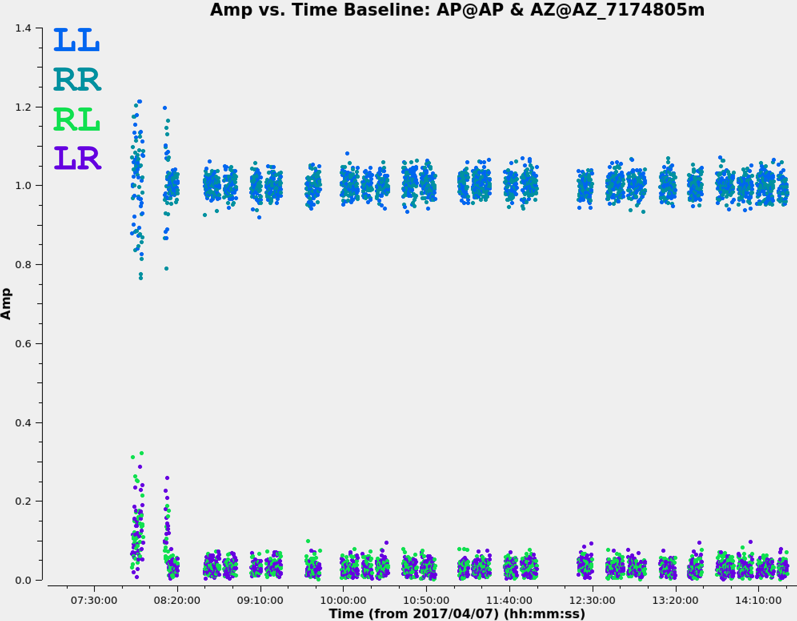
EXERCISE: Use the helper function $\texttt{plotPolTraces}$ to plot the closure traces for the antenna quadruplet ALMA-APEX-LMT-SMT (AA-AP-LM-AZ). Comment on the results. This function is called by running the lines:
from poltools_helper import plotPolTraces plotPolTraces(vis=["POLSIM_CASE-0.ms"],antennas=["AA","AP","LM","AZ"])
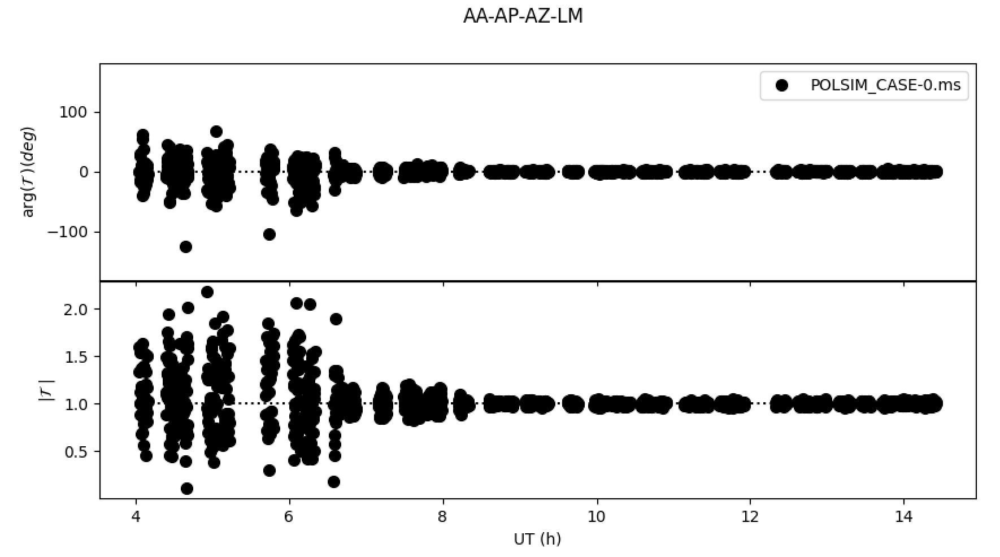
2B. CASE=1. Unpolarized point source (with D-terms)
By setting $\texttt{CASE = 1}$ in the simulation script, we will generate the measurement set POLSIM_CASE_1.ms, corresponding to a source with no polarization, but observed with an imperfect interferometer (i.e., affected by instrumental polarization).
QUESTION: Explore the parallel-hand visibilities, $\texttt{RR}$ and $\texttt{LL}$ (in amplitude and phase) versus time and compare them to those of the previous case (i.e., unpolarized source with no instrumental polarization). Comment on the results.
QUESTION 2: Now, repeat the previous comparison, but with the cross-hand visibilities, $\texttt{RL}$ and $\texttt{LR}$. Do you see any qualitative difference with respect to the parallel-hand visibilities? Why?
QUESTION 3: You may see rapid changes (especially in the visibility phases) for some baselines at some particular time ranges. What do you think is happening? Plotting the antenna elevations versus time (i.e., $\texttt{plot_elevs=True}$) may be helpful.
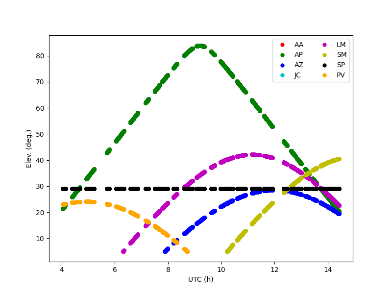
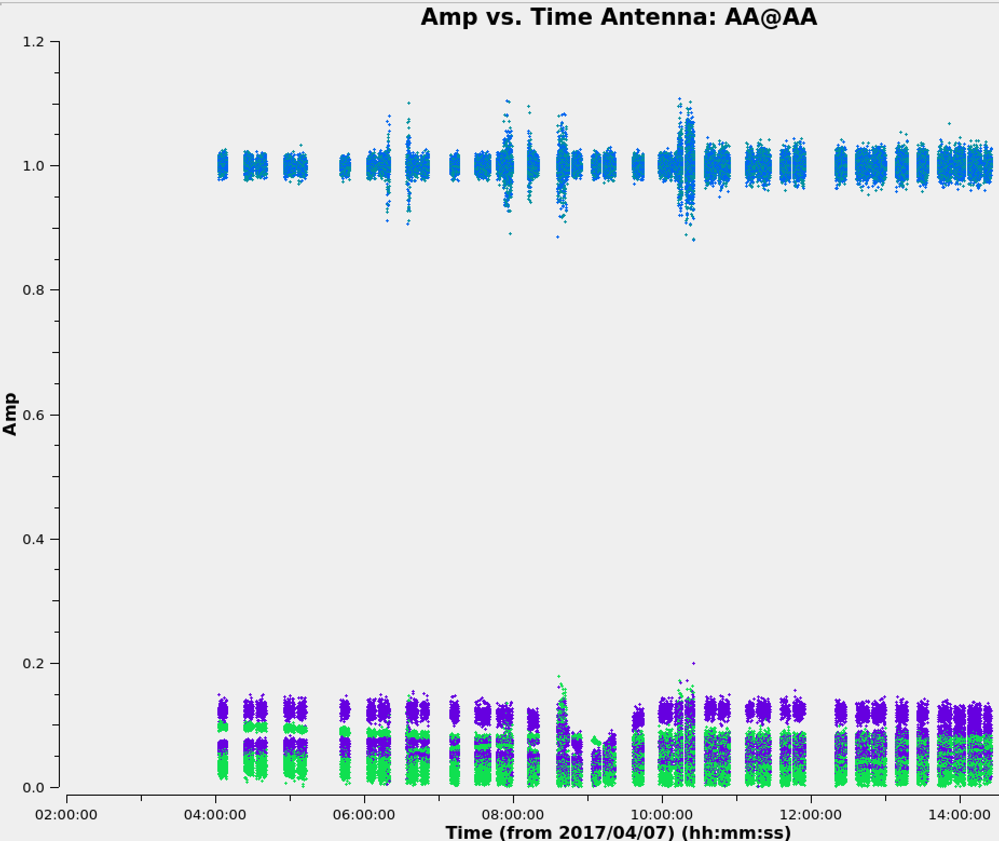
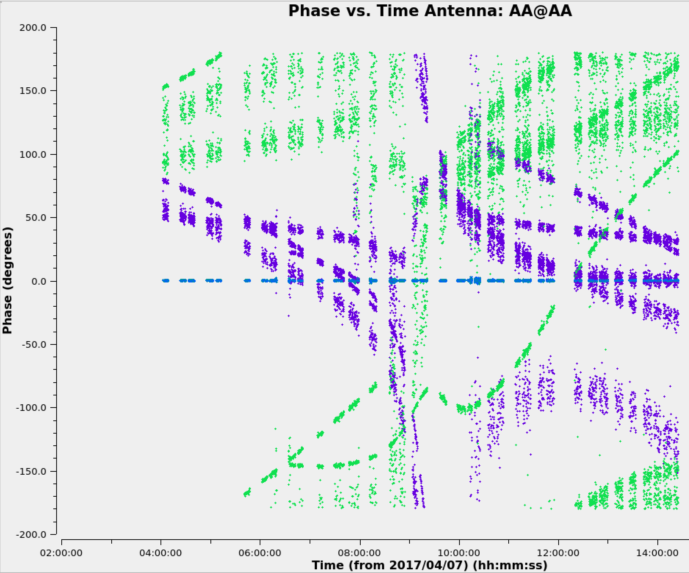
EXERCISE: Use the function $\texttt{plotPolTraces}$ to plot the closure traces for the antenna quadruplet ALMA-APEX-LMT-SMT (AA-AP-LM-AZ), as you did in the previous case. How does the new figure compare to that of $\texttt{CASE=0}$? Comment on the results.
EXERCISE 2: Use the script $\texttt{running_polsolve.py}$ to solve for the D-terms (just a handful of iterations should suffice). Check the correlation plots between true D-terms and estimated D-terms and discuss on the results. Now, use $\texttt{plotms}$ to plot the cross-hand visibilities of the $\texttt{CORRECTED_DATA}$ column and comment on the results.
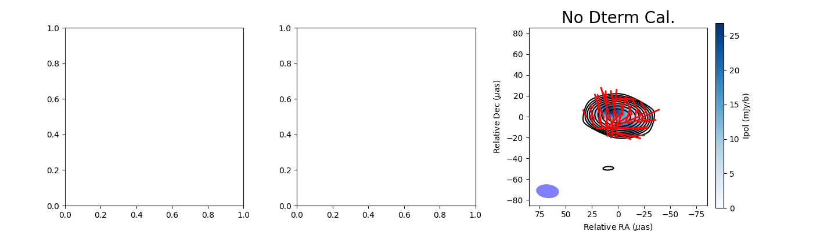
2C. CASE=2. Polarized point source (no D-terms)
By setting $\texttt{CASE = 2}$ in the simulation script, we will generate the measurement set POLSIM_CASE_2.ms, corresponding to a source with Stokes parameters $\texttt{I=1.0}$Jy, $\texttt{Q=0.1/I}$, $\texttt{U=0.0/I}$, $\texttt{V=0.0/I}$. Explore, again, the visibilities with $\texttt{plotms}$, as you did with the previous cases.
EXERCISE: What are the phases of $\texttt{RL}$ and $\texttt{LR}$? Re-generate the measurement set with $\texttt{Q=0.0/I}$, $\texttt{U=0.1/I}$ (i.e., exchanging $\texttt{U}$ and $\texttt{Q}$). What happens to the phases of $\texttt{RL}$ and $\texttt{LR}$? How does this relate to the Visibility Matrix in the Measurement Equation? Do you think that, once the data are fully calibrated, the RL phases may always be the opposite of the LR phases? Why?
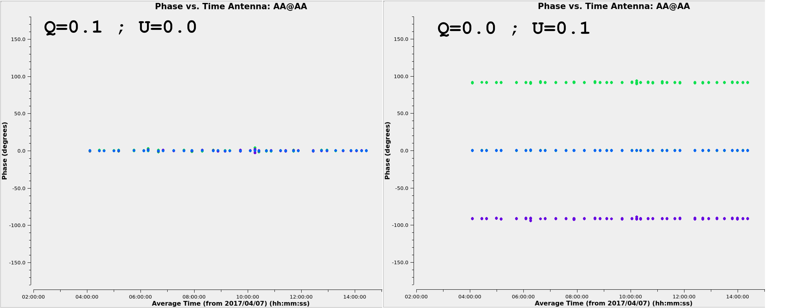
EXERCISE 2: Run $\texttt{iclean}$ on the last measurement set, using $\texttt{stokes="IQUV"}$. You should set the weighting to $\texttt{uniform}$ and the pixel size to about $\texttt{0.001 mas}$. The CASA image will have four polarization channels (I, Q, U, and V). Then, plot the image in $\texttt{CARTA}$, with raster (and/or contours) reflecting total intensity and lines (on top of the raster) to show the EVPA and intensity of the polarization.
- Alternatively to the use of $\texttt{CARTA}$, the image of polarized intensity can be generated in $\texttt{immath}$, using $\texttt{mode="poli"}$ and setting $\texttt{sigma}$ to the noise level (rms) of the image.
- The image with the EVPA information can also be generated in $\texttt{immath}$, using $\texttt{mode="pola"}$ and setting $\texttt{polithresh}$ to 3-5 times the rms.
- Another alternative is to use $\texttt{casa-poltools}$ to generate the polarized image. Just run, for instance:
(you have a description of all the $\texttt{plotPolImage}$ parameters by doing: $\texttt{help(plotPolImage}$).from poltools_helper import plotPolImage plotPolImage(img='CASE-2_IMG.image', mSigmaCut=2.0, SigmaCut=2.0, dPol=7, lPol=0.1, zoom=3)
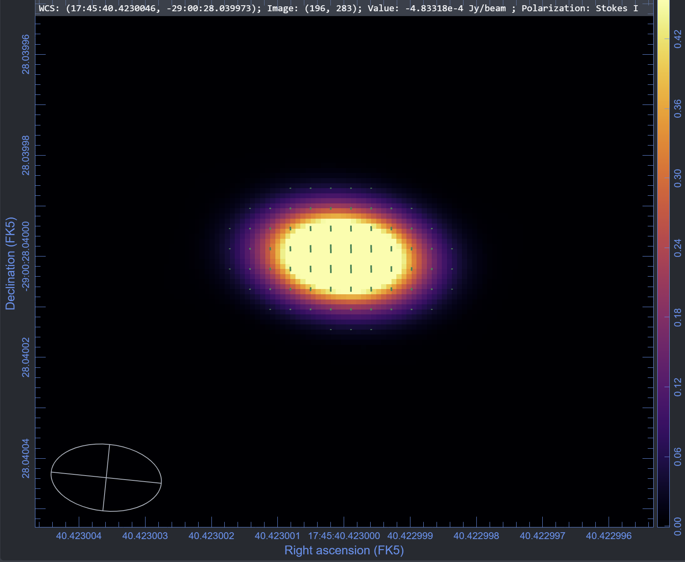
EXERCISE: Plot the closure traces for the quadruplet ALMA-APEX-LMT-SMT and compare them to those from the previous cases. Comment on the results.
2D. CASE=3. Polarized point source (with D-terms)
By setting $\texttt{CASE = 3}$ in the simulation script, we will generate the measurement set POLSIM_CASE_3.ms, corresponding to a source with the same Stokes parameters as in $\texttt{CASE = 2}$, but with instrumental polarization added to the signal. Explore the visibilities with $\texttt{plotms}$ and compare the results to those in the previous cases.
QUESTIONS: How do the cross-polarization amplitudes and phases (vs. time) compare to those of $\texttt{CASE = 1}$? And those of $\texttt{CASE = 2}$? How could we disentangle the source-instrinsic polarization from the instrumental signal?
EXERCISE: Run $\texttt{iclean}$ on this measurement set without performing any D-term calibration, and plot the full-polarization image in $\texttt{CARTA}$. How does the noise level in the polarization intensity compare to that of $\texttt{CASE = 2}$? Is the peak value of polarization intensity (or the EVPA at the peak) much affected by the D-terms?
OPTIONAL EXTRA EXERCISE 2: Repeat the previous exercise, but re-generating the measurement set with much larger (say, 3 times larger) D-terms. This can be done by increasing the value of $\texttt{DtermAmp}$. Compare results.
EXERCISE 3: Plot the closure traces for the quadruplet ALMA-APEX-LMT-SMT and compare them to those from the previous cases. Comment on the results.
EXERCISE 4: Use the script $\texttt{running_polsolve.py}$ to solve for the D-terms. Use $\texttt{plotms}$ to plot the cross-hand visibilities of the $\texttt{CORRECTED_DATA}$ column. How do these visibilities compare to those of $\texttt{CASE=2}$ (i.e., without D-term contamination)?
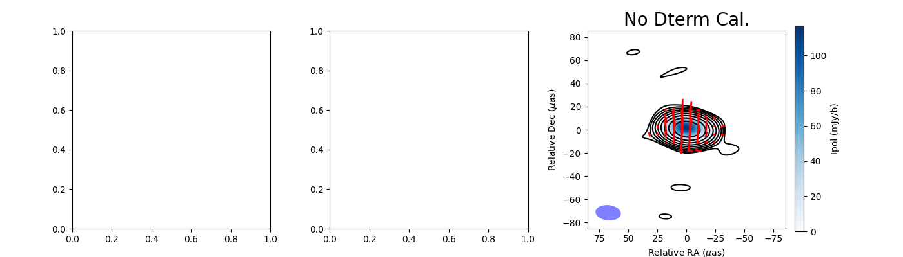
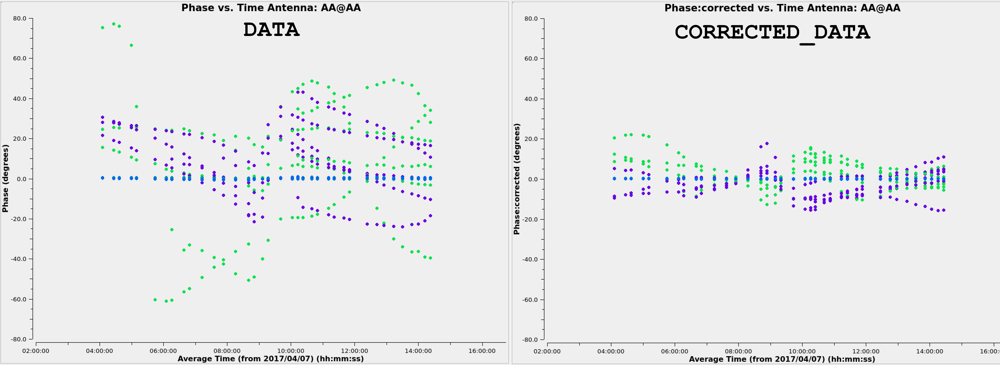
Solving for the source polarization simultaneously
The procedure followed in $\texttt{running_polsolve.py}$ is qualitatively similar to hybrid mapping (i.e., the process of self-calibration coupled to deconvolution). In this process, the source model is kept fixed when the D-terms are estimated.
However, if the source structure is very simple (e.g., a point source) it is possible to estimate the source polarization model and the D-terms simultaneously, hence optimizing convergence.
$\texttt{polsolve}$ can fit the polarization of calibrators with relatively resolved brightness distributions, modelling them as a set of point (delta) components. Each component (or subset of components) can be assigned one fractional polarization and EVPA, which will be fitted together with the antenna D-terms. Let's redo the calibration of
In this case, $\texttt{CLEAN_models}$ is a list of one Stokes I flux density (i.e., there is only one point source), $\texttt{frac_pol}$ is the (list of) a-priori fractional polarization of the point source and $\texttt{EVPA}$ is its a-priori polarization angle. Regarding $\texttt{PolSolve}$, it is a list of booleans (one per point source) that tells $\texttt{polsolve}$ whether the polarization of the point sources has to be fitted or kept fixed (True means to be fitted).polsolve(vis='POLSIM_CASE-3.ms', caltable='CASE-3_With-Source-Fitting.dterms', CLEAN_models=[1.0], frac_pol=[0.0], EVPA=[0.0], PolSolve=[True])
Once you have run the code, take a look at the text printed by $\texttt{polsolve}$ in the terminal. You will see an estimate of the polarization state of the point source, as well as the D-terms. You can compare the numbers by eye to those printed by $\texttt{polsimulate}$ when you generated the measurement set. However, it is a much better idea to generate correlation plots. To do this, just execute these lines:
from poltools_helper import compareDterms
compareDterms(dt1='POLSIM_CASE-3.true-dterms',dt2='CASE-3_With-Source-Fitting.dterms')
This function will generate a plot of the correlation between the true D-terms and the ones just estimated by $\texttt{polsolve}$ (the table is called $\texttt{CASE-3_With-Source-Fitting.dterms}$).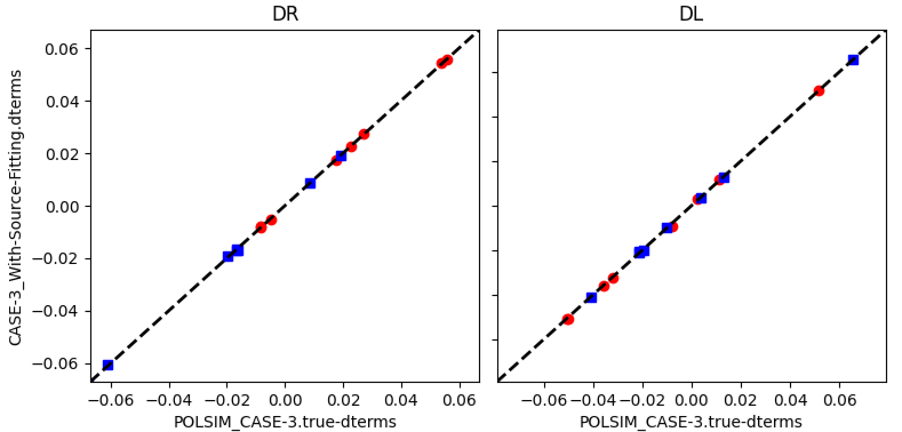
Using CASA's $\texttt{polcal}$ task
CASA has a built-in task called $\texttt{polcal}$, able to estimate the instrumental polarization (D-terms) and their possible frequency dependence. As in the fitting above, $\texttt{polcal}$ can also fit for the source polarization at the same time as the D-terms. Even though the use of this task is very simple, it has some limitations. Mainly:
- The calibrator is assumed to be point-like. This limitation is especially important for VLBI.
- Several antenna mounts (like the Nasmyth or the X-Y types) are not supported.
- The parallactic-angle correction is always forced to be applied on-the-fly (so we cannot use data that have been splitted from and ordinary amplitude-phase calibration).
- Open the script $\texttt{running-polsimulate.py}$ and set $\texttt{FORCE_ALTAZ}$ to $\texttt{True}$. This will override all the antenna mounts to be alt-azimuthal and will not apply the parallactic-angle correction to the simulated data. This is all we need to run $\texttt{polcal}$ successfully. Don't forget to make a backup of the measurement set that you created before, or you will loose the data!
- Run the $\texttt{polcal}$ task, to fit the D-terms and the source polarization:
polcal(vis='POLSIM_CASE-3_ALTAZ.ms', caltable='CASE-3_ALTAZ.POLCAL.Dt', poltype='D+QU') - Check the output of the CASA logger. You will see the Dterm estimates as well as the polarization properties of the point source:
........ 2026-07-25 11:14:08 INFO Calibrater For solint = inf, found 1 solution intervals. 2026-07-25 11:14:11 INFO Fractional polarization solution for POLSIM (spw = 0): : Q = 0.117364, U = -0.0102127 (P = 0.117807, X = -2.48661 deg) 2026-07-25 11:14:11 INFO Calibrater Found good D Jones solutions in 1 solution intervals. 2026-07-25 11:14:11 INFO The instrumental polarization solutions are: 2026-07-25 11:14:11 INFO Spw 0: 2026-07-25 11:14:11 INFO + Time 2017/04/07/10:06:52.5: 2026-07-25 11:14:11 INFO + Ant=AA: R: A=0.0339 P=-48.23 ; L: A=0.03198 P=-158.9 2026-07-25 11:14:11 INFO Ant=AP: R: A=0.0150937 P=93.3821 ; L: A=0.0185893 P=19.4299 2026-07-25 11:14:11 INFO Ant=AZ: R: A=0.0186179 P=-35.134 ; L: A=0.0627831 P=-132.581 2026-07-25 11:14:11 INFO Ant=JC: R: A=0.0429941 P=-20.3006 ; L: A=0.0639881 P=165.987 2026-07-25 11:14:11 INFO Ant=LM: R: A=0.0169335 P=155.431 ; L: A=0.0482837 P=-24.4703 2026-07-25 11:14:11 INFO Ant=SM: R: A=0.0684124 P=-107.407 ; L: A=0.0214689 P=-157.807 2026-07-25 11:14:11 INFO Ant=SP: R: A=0.0704858 P=-52.3352 ; L: A=0.028451 P=-112.486 2026-07-25 11:14:11 INFO Ant=PV: R: A=0.0301284 P=-48.0376 ; L: A=0.0904047 P=130.974 2026-07-25 11:14:11 INFO Writing solutions to table: CASE-3/POLCAL.DTERMS - Compare the fitted Stokes parameters to the true ones (i.e., I=1.0; Q=0.1; U=V=0.0). How do they compare?
Once you have run $\texttt{polcal}$, the program generates a D-term calibration table (named $\texttt{CASE-3_ALTAZ.POLCAL.Dt}$, in the example above) that you can apply to the data (but don't forget to set $\texttt{parang=True}$ if you decide to do this). We will not apply this table in the tutorial, but you can do it and produce a full-polarization image of the calibrated data, if you like.
In any case, you can plot the correlation between the true D-terms and the ones fitted by $\texttt{polcal}$:
from poltools_helper import compareDterms
compareDterms(dt1='POLSIM_CASE-3.true-dterms',dt2='CASE-3_ALTAZ.POLCAL.Dt')
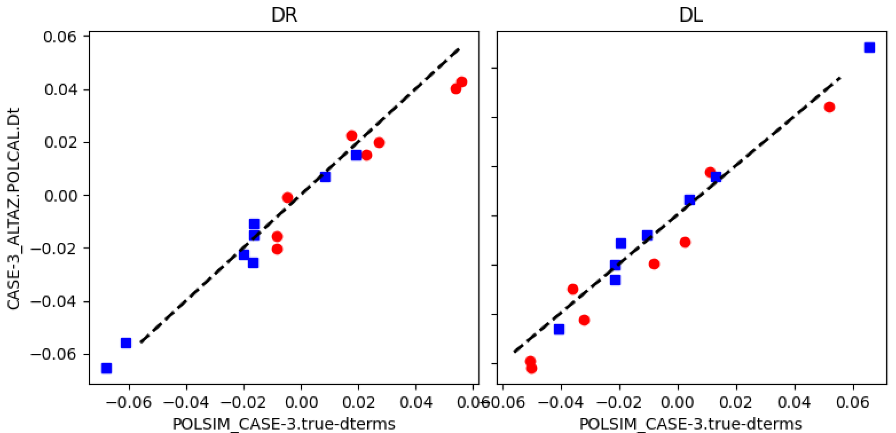
2E. CASE=4. Polarized double source (no D-terms)
By setting $\texttt{CASE = 4}$ in the simulation script, we will generate the measurement set POLSIM_CASE_4.ms, corresponding to a double source (oriented with a position angle of about 45 degrees) with different Stokes parameters for each component. In this case, the instrumental polarization is assumed perfect.
Run $\texttt{plotms}$ and generate plots of visibility amplitudes and phases for some prepresentative baselines, in both parallel-hand correlations (RR and LL) and cross-hand correlations (RL and LR). How do the RL visibilities compare to LR? Comment on the results in the frame of the Measurement Equation (and recalling the similar question about cross-hand phases made in $\texttt{CASE=2}$).
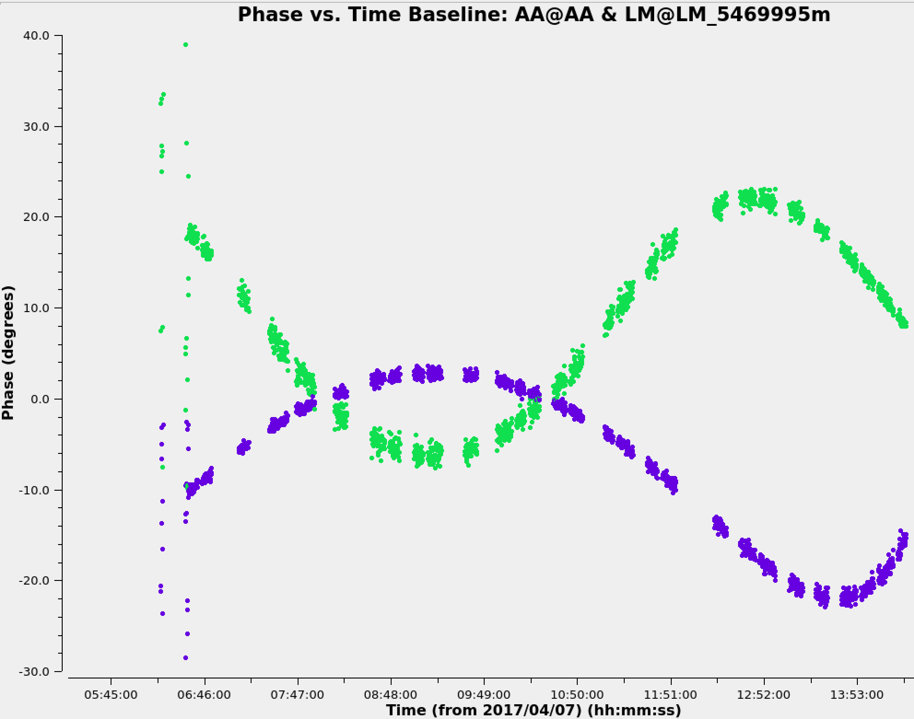
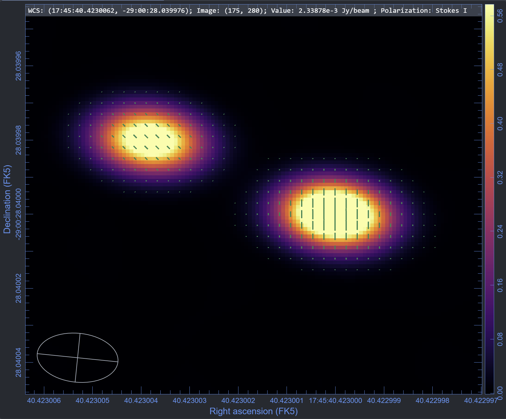
EXERCISE 2: Plot the closure traces for the quadruplet ALMA-APEX-LMT-SMT and compare them to those from the previous case. Comment on the results.
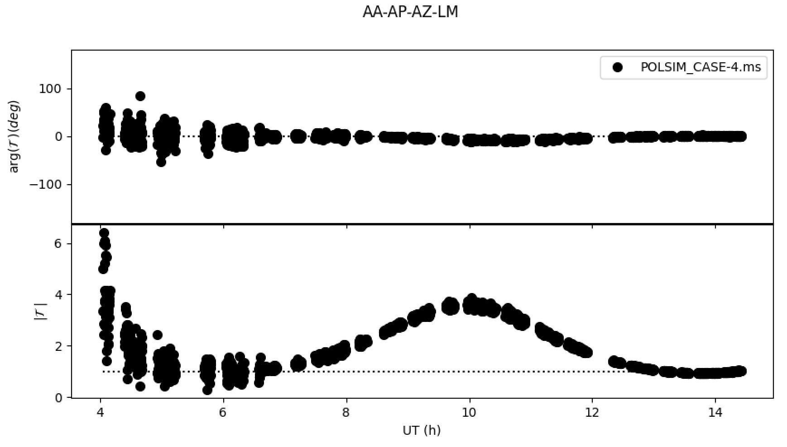
2F. CASE=5. Polarized double source (with D-terms)
By setting $\texttt{CASE = 5}$ in the simulation script, we will generate the measurement set POLSIM_CASE_5.ms, corresponding to the same double source as in $\texttt{CASE = 4}$, but observed with an interferometer with imperfect instrumental polarization.
EXERCISE: Generate a full-polarization image from these data, but without any D-term calibration. Use $\texttt{iclean}$ and $\texttt{CARTA}$ and compare to the image obtained in the previous case. How do the polarization intensities and EVPA compare with the case of perfect instrumental polarization? How does the polarized image noise compare?
EXERCISE 2: Plot the closure traces for the quadruplet ALMA-APEX-LMT-SMT and compare with those from the previous case. Comment on the results.
EXERCISE 3: Solve for the D-terms using the $\texttt{running_polsolve.py}$ script. How do the D-terms converge, compared to the case of a simple point-like structure?
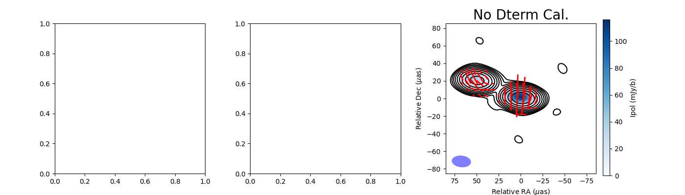
2G. CASE=6. Polarized point source (with cross-delay)
By setting $\texttt{CASE = 6}$ in the simulation script, we will generate the measurement set POLSIM_CASE_6.ms, corresponding to a polarized point source observed by an interferometer with instrumental polarization and non-zero cross-polarization delay. In this case, we will have to estimate the delay and apply it to the data, before attempting to calibrate the D-terms:
- Run $\texttt{gaincal}$ with $\texttt{gaintype='KCROSS'}$ (you may also set $\texttt{calmode='p'}$) and $\texttt{combine='scan'}$ (together with $\texttt{solint='inf'}$, since the R-L delay is constant). Setting ALMA as the reference antenna may also be a good option.
- Run $\texttt{applycal}$, to apply the cross-delay table and split the $\texttt{corrected}$ column into a new measurement set.
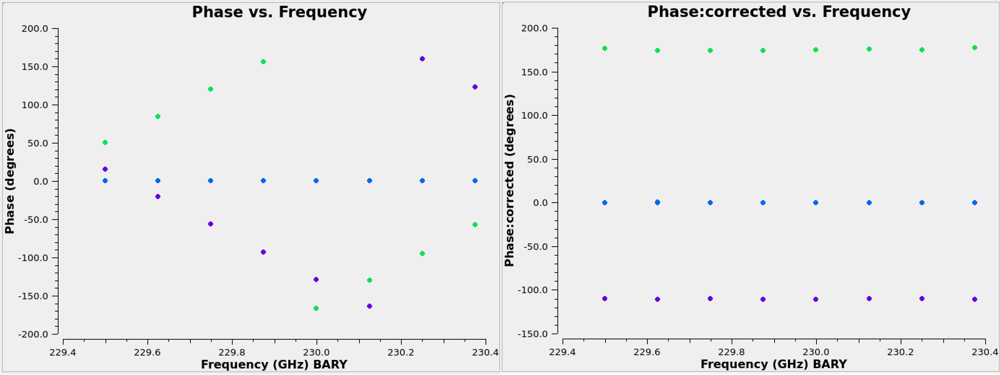
EXERCISE: Use the script $\texttt{running_polsolve.py}$ to solve for the D-terms, using the new measurement set (i.e., the one with the corrected cross-delay). Compare the final image (using, e.g., $\texttt{CARTA}$) to that of the previous case. Take a look at the correlation plots between fitted D-terms and their ground-truth values and comment on the results.
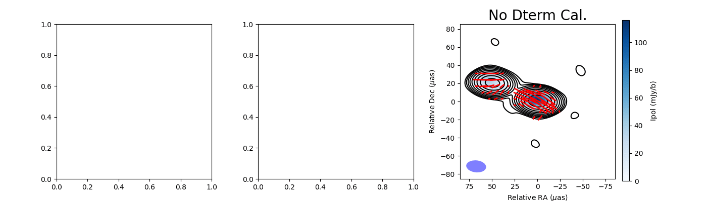
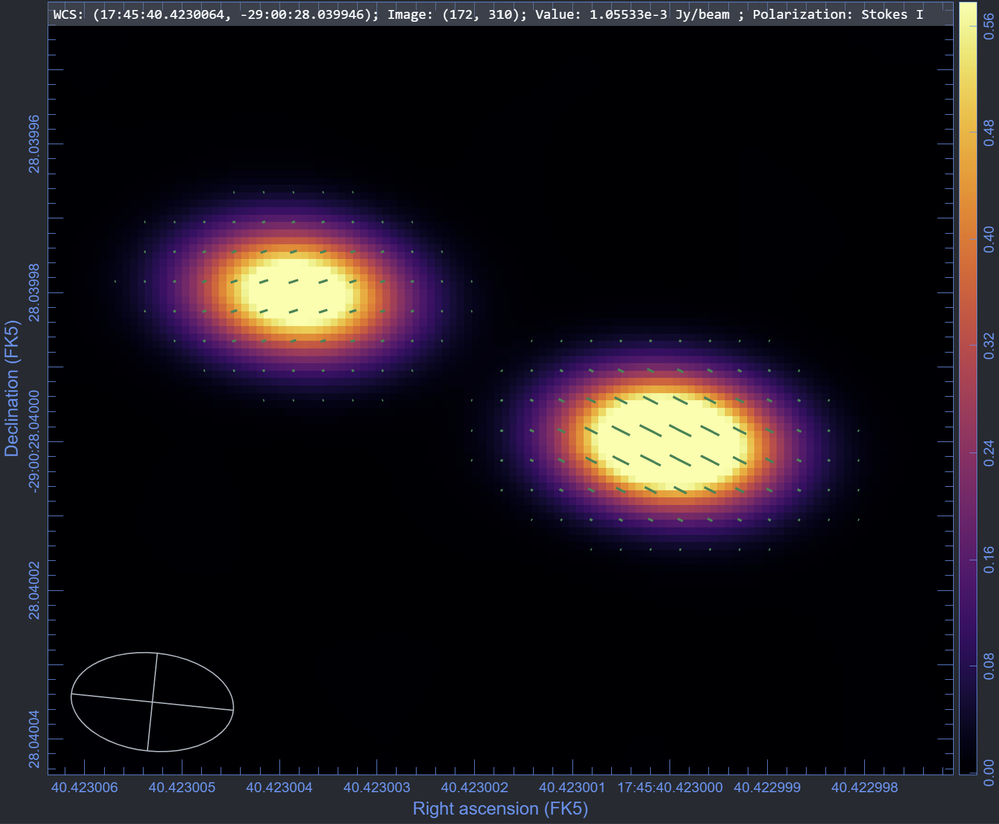
3. Real data
3A. EHT Observations of M87* in 2017
Let us run $\texttt{listobs}$ on the measurement set $\texttt{EHT-11Apr17_M87.ms}$, to check its contents:
================================================================================
MeasurementSet Name: /Users/jackradcliffe/Documents/ERIS26/ERIS26_polarisation/all_avg_pol.ms MS Version 2
================================================================================
Observer: TS8004 Project: TS8004
Observation: e-MERLIN
Data records: 259120 Total elapsed time = 79789.8 seconds
Observed from 01-Aug-2019/23:20:10.5 to 02-Aug-2019/21:30:00.3 (UTC)
ObservationID = 0 ArrayID = 0
Date Timerange (UTC) Scan FldId FieldName nRows SpwIds Average Interval(s) ScanIntent
01-Aug-2019/23:20:10.5 - 00:00:00.2 1 3 0319+4130 9000 [0,1,2,3] [15.9, 15.9, 15.9, 15.9]
02-Aug-2019/00:00:04.0 - 00:00:07.0 2 2 1302+5748 60 [0,1,2,3] [3, 3, 3, 3]
00:04:54.5 - 00:06:01.0 3 1 1252+5634 240 [0,1,2,3] [14.7, 14.7, 14.7, 14.7]
.........
20:56:03.0 - 21:00:00.2 367 1 1252+5634 880 [0,1,2,3] [14.8, 14.8, 14.8, 14.8]
21:00:03.0 - 21:30:00.3 368 0 1331+3030 2752 [0,1,2,3] [15.7, 15.7, 15.7, 15.7]
(nRows = Total number of rows per scan)
Fields: 4
ID Code Name RA Decl Epoch nRows
0 ACAL 1331+3030 13:31:08.287300 +30.30.32.95900 J2000 11748
1 1252+5634 12:52:26.285900 +56.34.19.48800 J2000 151728
2 1302+5748 13:02:52.465277 +57.48.37.60932 J2000 72400
3 CAL 0319+4130 03:19:48.160110 +41.30.42.10330 J2000 23244
Spectral Windows: (4 unique spectral windows and 1 unique polarization setups)
SpwID Name #Chans Frame Ch0(MHz) ChanWid(kHz) TotBW(kHz) CtrFreq(MHz) Corrs
0 none 16 GEO 4820.000 8000.000 128000.0 4880.0000 RR RL LR LL
1 none 16 GEO 4948.000 8000.000 128000.0 5008.0000 RR RL LR LL
2 none 16 GEO 5076.000 8000.000 128000.0 5136.0000 RR RL LR LL
3 none 16 GEO 5204.000 8000.000 128000.0 5264.0000 RR RL LR LL
The SOURCE table is empty: see the FIELD table
Antennas: 6:
ID Name Station Diam. Long. Lat. Offset from array center (m) ITRF Geocentric coordinates (m)
East North Elevation x y z
0 Mk2 Mk2 24.0 m -002.18.14.1 +53.02.57.3 19618.7284 20856.7583 6908.7107 3822846.760000 -153802.280000 5086285.900000
1 Kn Kn 25.0 m -002.59.49.7 +52.36.17.2 -26823.2185 -28465.4973 7055.9694 3860084.921000 -202105.036000 5056568.917000
2 De De 25.0 m -002.08.40.0 +51.54.49.9 30300.7876 -105129.6730 7263.6278 3923442.718000 -146914.386000 5009755.292000
3 Pi Pi 25.0 m -002.26.43.3 +53.06.14.9 10141.4322 26944.5297 6845.6479 3817549.874000 -163031.121000 5089896.642000
4 Da Da 25.0 m -002.32.08.4 +52.58.17.2 4093.0417 12222.9915 6904.6753 3829087.869000 -169568.939000 5081082.350000
5 Cm Cm 32.0 m +000.02.13.7 +51.58.49.3 176453.7144 -97751.3908 7233.2945 3920356.264000 2541.973000 5014284.4800003C277.1_pol2026.py
2. Set models and inspect data
We split out the corrected column to make further calibration more convenient (why?) but this means that we have to re-insert models for the calibrators and in fact use a new, polarised model for 3C286 (1331+3030).
Step 2
Uses the flux density provided for 0319+4130 and the flux density which you previously derived for the phase reference 1302+5748. Tip: If you need to find a previously-set flux density, you can do it like this in CASA:
listhistory(vis = 'all_avg_pol.ms')setjy (you can do this for any task used on an MS).
Note: For both 0319+4130 and 1302+5748, we set only the Stokes $I$ flux (see above, where fluxdensity = [0.449, 0.0, 0.0, 0.0] (you can also check for 0319+4130). These values are for Stokes [ $I$, $Q$, $U$, $V$]. The $Q$, $U$, $V$ are zero for different reasons: for the phase reference 1302+5748 we do not know the polarised flux density. For 0319+4130 (3C84) we do know - that it is indeed zero at this frequency range and resolution!
The flux density for 1331+3030 (3C286) is set by using a model derived from imaging, since it is both polarised and resolved. The task ft Fourier transforms the clean components and inserts them in the model column of the MS. You can check that 1331+3030_IQUV_5GHz.clean.model.tt0 has 4 Stokes planes either with task imhead or in the CASA viewer or Carta.
Question: In ft, why do we use .tt0 and .tt1 images and nterms=2?
Step 3
This step plots the model amplitude against uv distance for 3C286 so that you can see that it is about $11\%$ polarised. Interactively or by adding to the script, plot phase as well. Note the values of RL and LR (green and purple) at the shortest uv distance, $\pm66$ degrees, or twice the map linear polarisation position angle (see previous talk). You might find the overall shape easier to understand if you plot phase against time and iterate through the baselines. You also could plot the models for the other calibration sources (they should be boring)


Step 4
This step plots the phase reference $\texttt{DATA}$ phase against time to show parallactic angle rotation.
Questions: This is for a long baseline, what would you expect it to look like on a shorter baseline? Check. What would you expect a similar plot for the target to show (if it was bright enough)?

Step 5
This step plots the uncorrected cross-hand delay, that is, the slope of phase with frequency.

Below, this is compared with the model phase - so we can be sure that the slope on the actual data is due to instrumental errors. Recall that in deriving the initial calibration delay and bandpass corrections, the phase of Mk2 was held constant, but the errors in its cross-hands were thus never corrected and propagate to all the other antennas. Hence the cross-hand delay correction should be the same for all antennas. Note that the model was observed at a different time from these data.

3. Derive corrections for cross-hand delay, leakage, polarisation angle and apply
Step 6
In this step we derive the cross-hand delay correction using 1331+3030 as it has fairly strong (~0.6 Jy) emission in the cross hands. As an instrumental correction, it is expected to be constant in time over the observing session, and as it is mainly due to the reference antenna it should be constant for all antennas, hence solint='inf', combine='scan'.
Question:From the Mk2-Cm uncorrected delay, what do you expect to be the magnitude of the correction in nanoseconds?
Check this from the plot; the casalogger will give the plot range, too:
2022-09-09 16:28:21 INFO PlotMS Delay:data: -0.451982 to 0 (unflagged); (no flagged data)
Step 7
Step derives the leakage corrections, that is, the leakage of receiver signal between the hands of polarisation due to imperfections in the waveguides, electronics etc. As noted, this is simple as we have a calibration source, 3C84, which is known to be unpolarised.
Question:When applying 1331+3030.KCROSS, we use spwmap=[0,0,0,0]. Can you work out why?
polcal(vis='all_avg_pol.ms',
caltable= '0319+4130.D1',
field='0319+4130',
minblperant=2,
minsnr=3,
refant=antref,
poltype='Df', # Leakage is frequency-dependent
solint='inf', # but constant in time for a given receiver
combine='scan',
preavg=120.0, # pre-averaging time (s) (with ~constant parallactic angle)
gaintable=['1331+3030.KCROSS'],
spwmap=[0,0,0,0],
interp='nearest' )
The pre-averaging is not strictly needed here but does no harm, see the extra activities at the end for its use. Since we averaged all spectral windows in deriving 1331+3030.KCROSS, there is only one spw entry in that table, so we use the spwmap parameter here to apply the one correction to all four spw present.
The leakage is pretty messy but should not exceed ~20% in amplitude at these frequencies.


Step 8
The final correction, derived in Step 8, is for polarisation angle $\chi$, which is derived from the R-L visibility phase offset (see talks). $\chi = 0.5\arctan(U/Q)$. 3C286 has a well-known polarisation angle which is almost constant at 33 degrees (hence the $\pm$66 degree relationship between RL and LR). Look at the script and check you understand the parameter settings.
At around 5 GHz, the errors are constant in time for the duration of these observations, but see Michiel Brentjen's talk for the issues at lower frequencies.
Step 9
Step 9 applies the polarisation corrections to 3C286 and 3C84 and plots the corrected visibilities for 3C286, showing the improvements before and after. Below is the uncorrected delay.

And the corrected delay:

4. Image 3C286 in full polarisation and plot the polarised image
Step 10
Before looking at Step 10, refresh your memory from the Imaging tutorial and think about what parameters you need to make a full polarisation image.
tclean(vis='all_avg_pol.ms',
field='1331+3030',
imagename='pol3C286',
stokes='IQUV',
threshold=0,
specmode='mfs',
restoringbeam='common',
cell='0.005arcsec',
imsize=200,
uvtaper='0.07arcsec',
interactive=True,
niter=200) run_iclean(vis='all_avg_pol.ms',
field='1331+3030',
imagename='pol3C286',
stokes='IQUV',
threshold=0,
specmode='mfs',
restoringbeam='common',
cell='0.005arcsec',
imsize=200,
niter=200) Some notes on these parameters:
- The obvious one is
stokes='IQUV'. restoringbeam='common'is used because, if different Stokes parameters have been flagged differently, or even just due to the different orientations of the feeds, very slightly different beams may be fitted for the different Stokes. Some later analysis tasks cannot cope with this, so we force the beam to be the same for each Stokes plane. (This is also worth remembering for spectral cubes as long as the frequency range is not so great that you need a different beam).uvtaper='0.07arcsec'is used because 3C286 has a bright core but also weak and very extended emission which is resolved out by e-MERLIN, especially as the observation is very short. The effect of this taper is to apply a Gaussian weighting to the visibility data such that baseline lengths contributing 0.07 arcsec resolution (i.e., approximately the average of the naturally fitted beam) have half-weight, longer baselines have less weight etc. and the resulting beam is more circular and artefacts are reduced.
When imaging remember to mask 'all polarisations' as shown below (shift + a when adding regions for Mac users),

At first you will see in the logger that clean components are only found for Stokes $I$, but $Q$ and $U$ should start to be cleaned as the threshold (as a fraction of the residuals) decreases.

Keep cleaning until you get to the residuals that look like noise (see below) and stop cleaning

This should make images that look like those below

This step also uses task immath to split out the planes of the cube, and then imstat to measure the peak and rms of each image. The boxes are chosen to cover the centre of the image for the peak, and to exclude it for the rms. Values are printed out. I got these, but you might get different values depending on masking and how deeply you cleaned.
# pol3C286I.image rms 56.080 mJy
# pol3C286I.image peak 6260.000 mJy/bm
# pol3C286Q.image rms 9.013 mJy
# pol3C286Q.image peak 297.321 mJy/bm
# pol3C286U.image rms 7.843 mJy
# pol3C286U.image peak 710.796 mJy/bm
# pol3C286V.image rms 16.035 mJy
# pol3C286V.image peak 86.381 mJy/bmQuestion: Why is the rms lower in $Q$ and $U$?
Note that $V$ should be zero, or at least compatible with noise; here it is about $5\sigma$ which shows that there is residual leakage, but at a similar level to the $I$ noise.
Step 11
In this step, we will make polarisation products. First, polarised intensity $P$,
Question: What is the operation on the images used to make linear polarised intensity?
immath(imagename ='pol3C286image',
mode='lpoli',
sigma = '0.01Jy/beam',
outfile='pol3C286poli')
The task forms $P = \sqrt{Q^2+U^2}$. However, such an image is entirely positive, but the noise in the original interferometry images is both positive and negative. Hence, the calculated polarised intensity will be slightly too high unless it is debiased. The sigma parameter should be approximately the expected noise in $P$. The exact relationship is more complicated, see the talk and references.
You can predict the error in the Poli ($P$) map by propagation of error, and use this to check or change the value set in the script for sigma in CASA:
from math import *
P = sqrt(Q**2+U**2)
Q = 297.321
U = 710.796
errQ= 9.013
errU= 7.843
errP=(sqrt(U**2*errU**2+Q**2*errQ**2))/P
Next, polarisation angle map Pola ($\chi$). Here, polithresh is the limit of believable linear polarisation, about 3 $\times$ noise, check/change as needed.
immath(imagename ='pol3C286image',
mode='pola',
polithresh='0.03Jy/beam',
outfile='pol3C286pola')You can calculate the approximate polarisation angle at the peak in CASA:
POLA = 0.5*degrees(atan2(U, Q))NB: If you really want to check the error in $\arctan$, it is,
errPOLA=degrees(0.5*sqrt((U**2*errQ**2 + Q**2*errU**2)/(U**2+Q**2)**2))- pol3C286I.image as raster
- pol3C286poli as contour
- pol3C286pola as vector
Even better, it is possible to display the vectors' lengths proportional to the polarised intensity. In Step 11, this is done by making an image thus:
po.open('pol3C286image') # this is the 4-plane IQUV image
po.complexlinpol('1331+3030.cmplxlinpol')
po.close()
You can find more about the use of the imagepol tool in https://casadocs.readthedocs.io/en/stable/notebooks/image_analysis.html and https://casa.nrao.edu/docs/casaref/imagepol-Tool.html
Then, as before, open the total intensity and Poli images, but then, instead of clicking on an image, just enter the following in the LEL box as shown below:
'1331+3030.cmplxlinpol'['pol3C286poli'>0.25]This means, open the cmplxlinpol image where the Poli image exceeds 0.25 Jy (change the threshold as wanted).

5. Apply calibration, image target in full polarisation and plot the polarised image
These are the same procedures as for calibrating and imaging 3C286, but you will need more clean iterations and masking (don't forget, all polarisations!) and different thresholds.
The final image will look something like this:

6. Additional activities
Suggestions for further work:
A. These data:
- Estimate the errors in the polarisation images of 3C277.1, from the images and/or analytically
- Experiment with the different weightings and imaging parameters as at the end of the imaging and self-calibration tutorials, but in full polarisation.
- Image 3C84 in polarisation and use it to estimate residual leakage error
- Rewrite step 7 to use the phase calibrator as a leakage calibrator. In this case, we do not know the source polarisation in advance, but the observations are more than 3 hr. Thus , use poltype = 'D+QU' to solve simultaneously for source polarisation and leakage, using the property that the source polarisation angle will rotate with the sky but the leakage will be fixed to the telescope orientation. This means that, given a long enough observation, the (analytically known) parallactic angle rotation can be used to separate these properties. Then apply the calibration and image the phase reference in polarisation.
B. Look at the polarisation CASA guides: